COBBLE
Shifting Teens Toward Offline Interaction
Why do teenagers constantly surrounded by others still feel emotionally alone — and why does face-to-face interaction feel too risky to attempt?
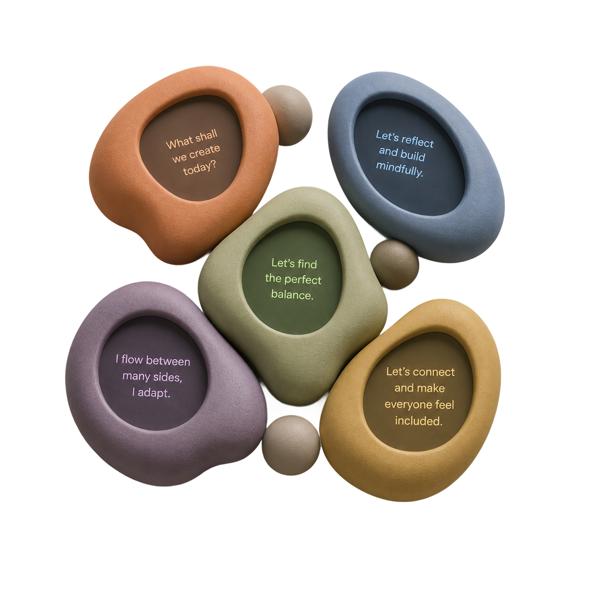
Section 01 — The Context & Problem
Reduced Social Interaction
in Teenagers
Adolescence has always been turbulent — but something has fundamentally shifted. The phone in every pocket has quietly become the preferred social space, turning presence into performance and connection into consumption.
Phone + Snubbing
Ignoring those physically present in favour of a screen. It isn't rudeness — it's a symptom. And it's reshaping how an entire generation learns to relate to one another.
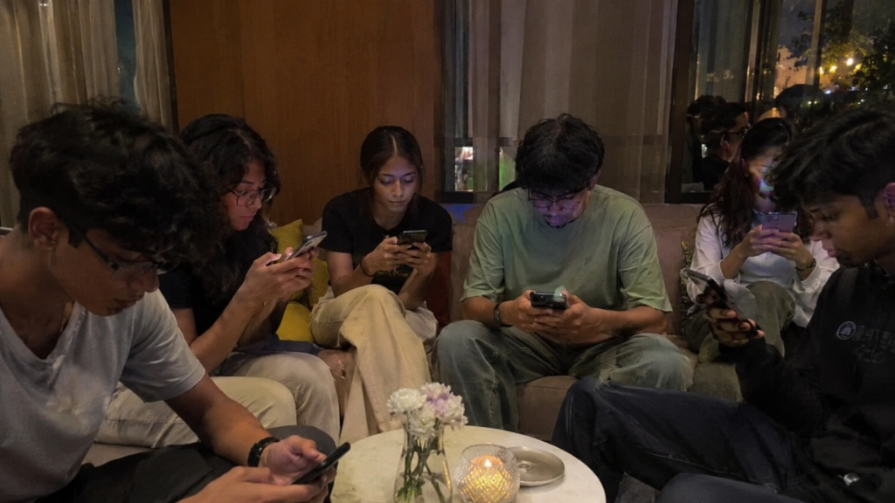
Secondary drivers — Why it's really happening
Section 02 — Primary Research & Initial Segmentation
We went to where
teenagers actually are.
Surveys, in-depth interviews, and silent observation across schools, canteens, parks and transit — watching how teens behave when they think no one is analyzing them.
Demographics
Observational Divergence
Avg daily screen time in observed cohort
Social time replaced by parallel phone use
Teens felt "invisible" in group settings
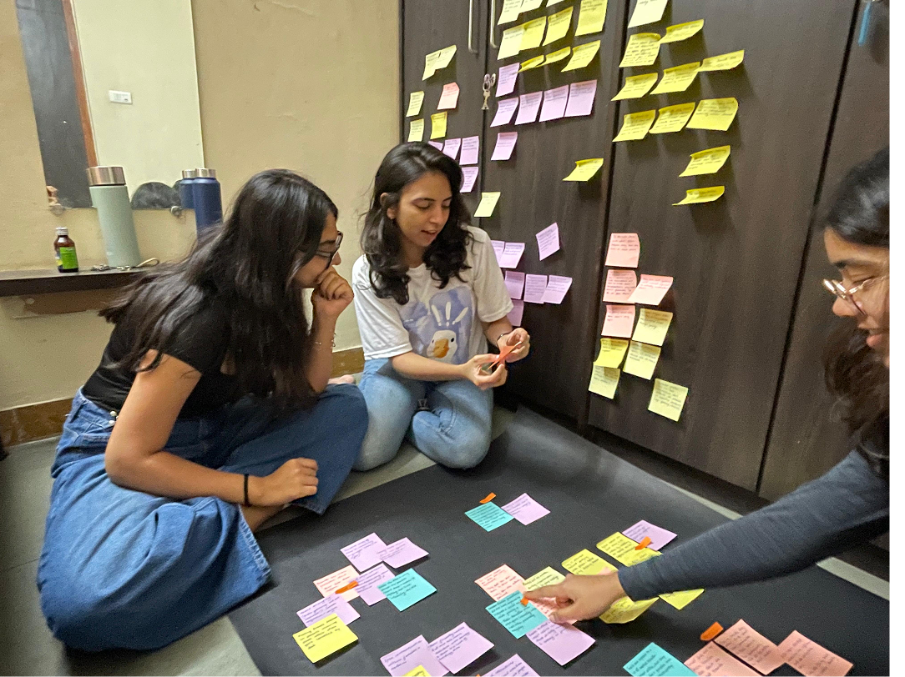
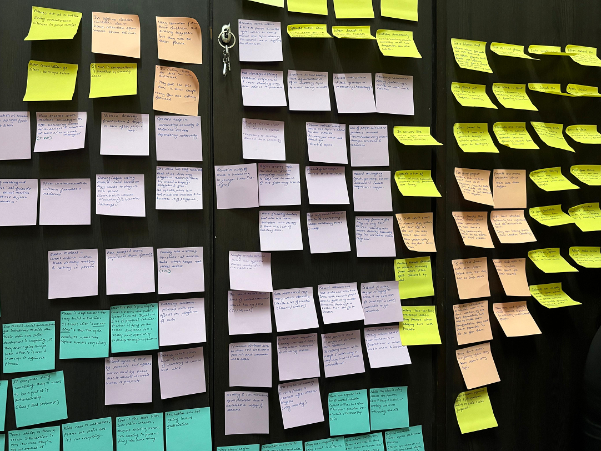
Behavior-Based Audience Segmentation
Section 03 — Root Cause Analysis
Digging
Deeper.
Surface behaviors are easy to see. The forces driving them run far deeper — through social systems, emotional conditioning, and design choices that have quietly normalized disconnection.
The Iceberg Model — Layered Categorization of Insights
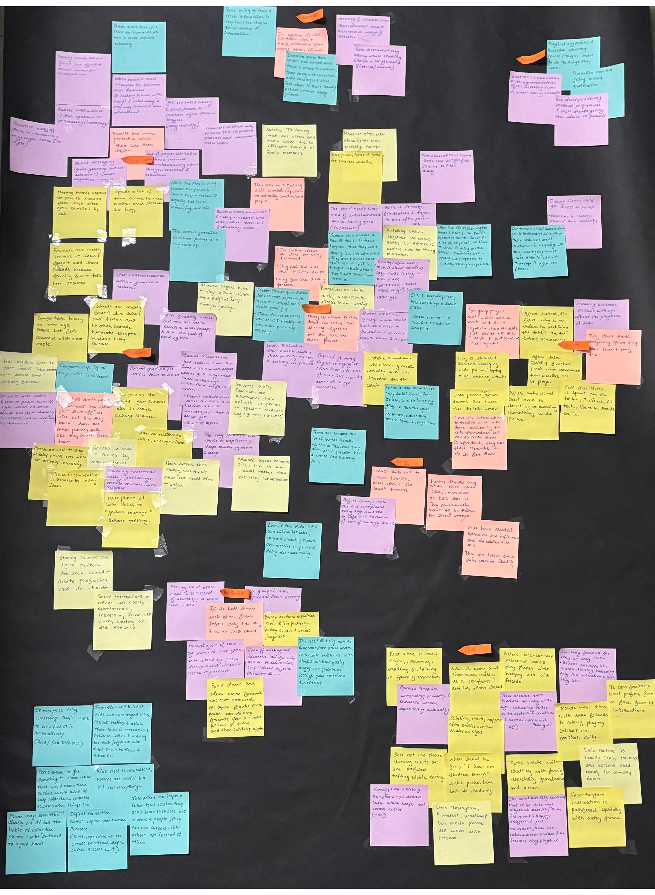
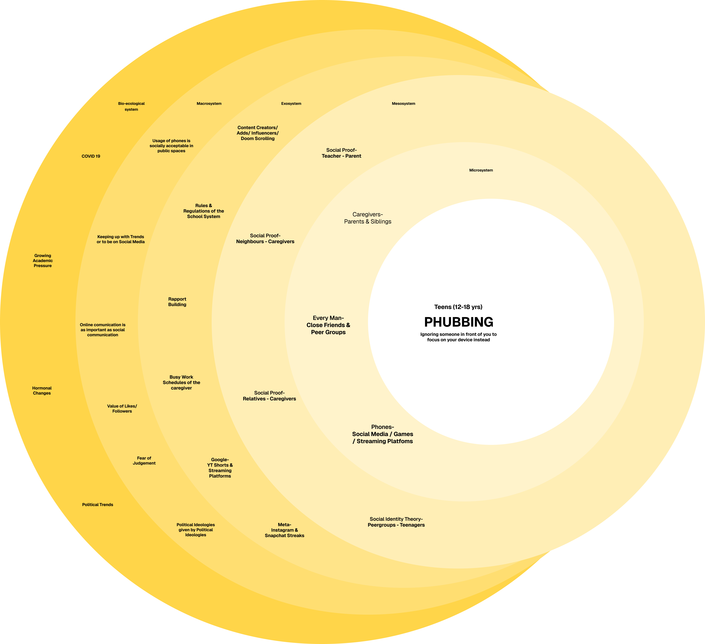
Section 04 — Sensitizing & Generative Toolkit
Taking Insights
Forward.
Research tells you what. The generative toolkit helps understand why — through participatory methods that surface the felt experience of being a teenager today.
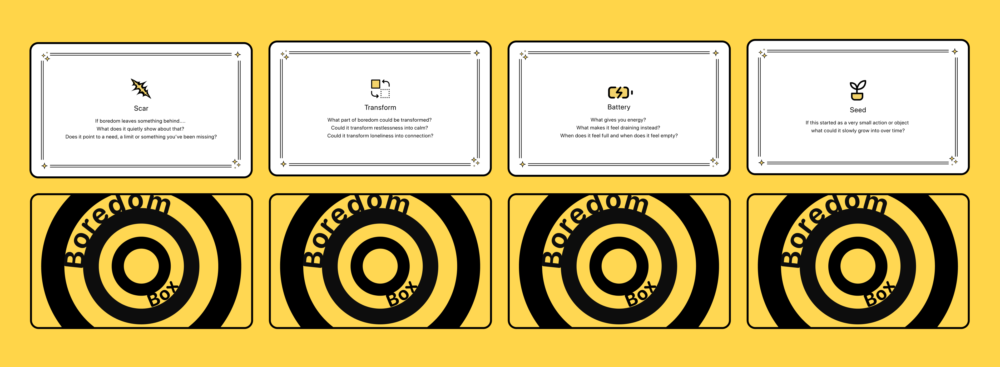
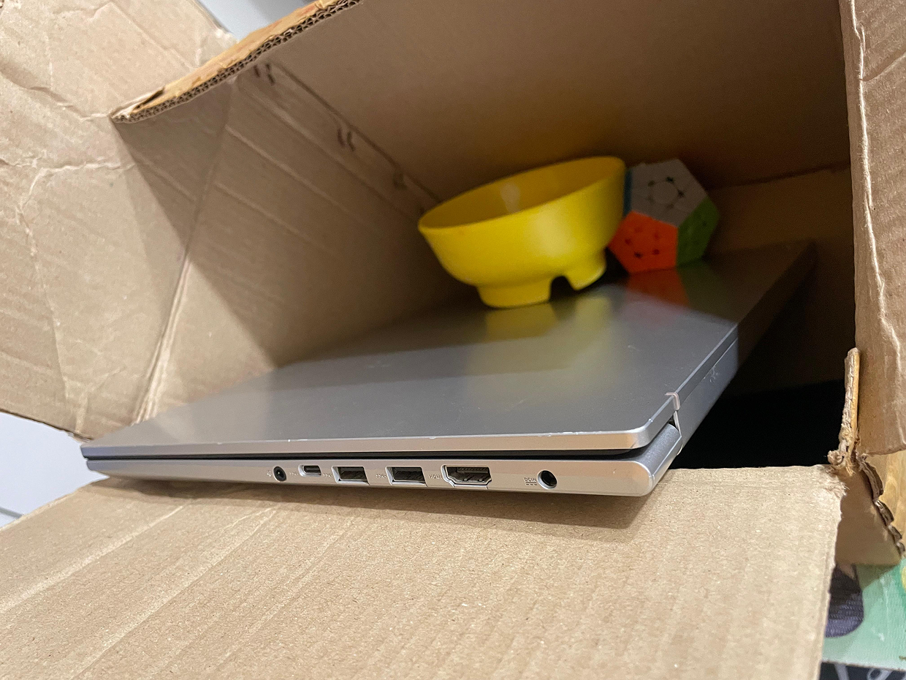
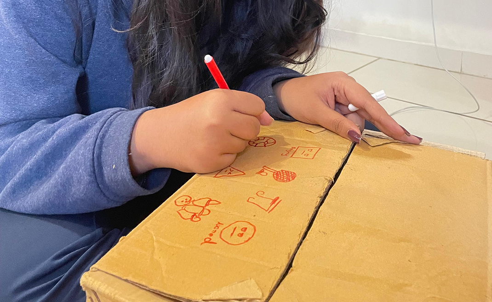
What emerged: a consistent desire for structured spontaneity — social environments with enough scaffolding to feel safe, and enough openness to feel real.
What Teens Asked For
"Something that makes it okay to put the phone down without it being a big deal."
"A reason to talk to someone I don't already know."
"Something that doesn't feel like a school activity."
Final Insights
Section 05 — Behavioral Frameworks
Who are we
designing for?
Beyond demographics, behavior tells a truer story. After synthesizing all the research, four distinct profiles emerged — each with a unique relationship to social risk, digital comfort, and offline aspiration.
The COM-B Model
Understanding what needs to shift for behavior change to happen.
- Teens lack emotional vocabulary for in-person conflict
- Underdeveloped tolerance for social ambiguity
- Limited experience reading non-verbal cues
- Reduced capacity for unstructured conversation
- No safe, structured offline social spaces for teens
- Peer groups default to digital interaction
- All social occasions mediated by screens
- Adult-designed activities lack peer credibility
- Intellectual understanding that screens reduce connection
- Habitual reward from notifications overrides intent
- Social cost of unplugging feels too high among peers
- Short-term dopamine beats long-term belonging
Friction Mapping — Pressure Map
Where does the most friction accumulate on a teen's journey toward offline engagement?
Section 06 — From Insight to Ideation
The questions that drove everything that came next.
Context of Use — Scenario
Arjun, 17. He's in a canteen full of classmates, but he's alone in his feed.
His group is right there — but everyone's on their phones. There's no reason to put them down.
There's no structure. There's no excuse. So nobody does.
What if there was something that gave him a reason — something worth looking up for?
The Product · Non-Digital Emotional Regulation
Tactile interactive stones designed to help teenagers swap passive scrolling for real-world connection. By utilizing touch, calibrated weight, and collaborative play, personality-driven stones foster natural, low-pressure social engagement.
Physical Architecture · Sensory Grounding
Designed to invite touch,
not demand attention.
Every physical aspect of Cobble has been engineered to counteract the overstimulating digital habits of the modern smartphone.
The "Soft Dopamine" Palette
Personality-driven stones.
To counter digital overstimulation, Cobble uses muted, clay-like, desaturated pastels that function as calming tactile anchors rather than triggering dopamine spikes.
When alone, the stone serves as a physical anchor to disrupt automatic digital reflexes and regulate anxiety before it triggers phone unlocking.
- Detects fidgeting or grip tension through embedded haptic sensors
- Emits slow, steady organic light pulses to guide deep respiratory pacing
- Soft grounding prompts: "Breathe slower" or "Notice 3 sounds around you"
- Absorbs nervous energy silently without drawing public attention
When multiple stones snap together magnetically, the focus immediately shifts away from the object toward the people around the table.
- Recognizes personality combinations (e.g. Introvert Blue + Extrovert Coral)
- Generates low-stakes collaborative prompts and playful physical challenges
- Provides an organic social excuse: nobody has to take the risk of cold-starting
- Transforms passive parallel phone use into collective shared presence
Scenario Walkthrough · Real-Life Context
How Cobble transforms a moment of overwhelm.
Product — Digital & Tangible Architecture
Designed for the world
teens actually live in.
 01 — Tactile Personality Stones
01 — Tactile Personality Stones
Personality-Driven Tactile Stones
Five distinct clay-textured stones with calibrated weight and adaptive prompts, engineered to disrupt passive scrolling and invite shared offline connection.
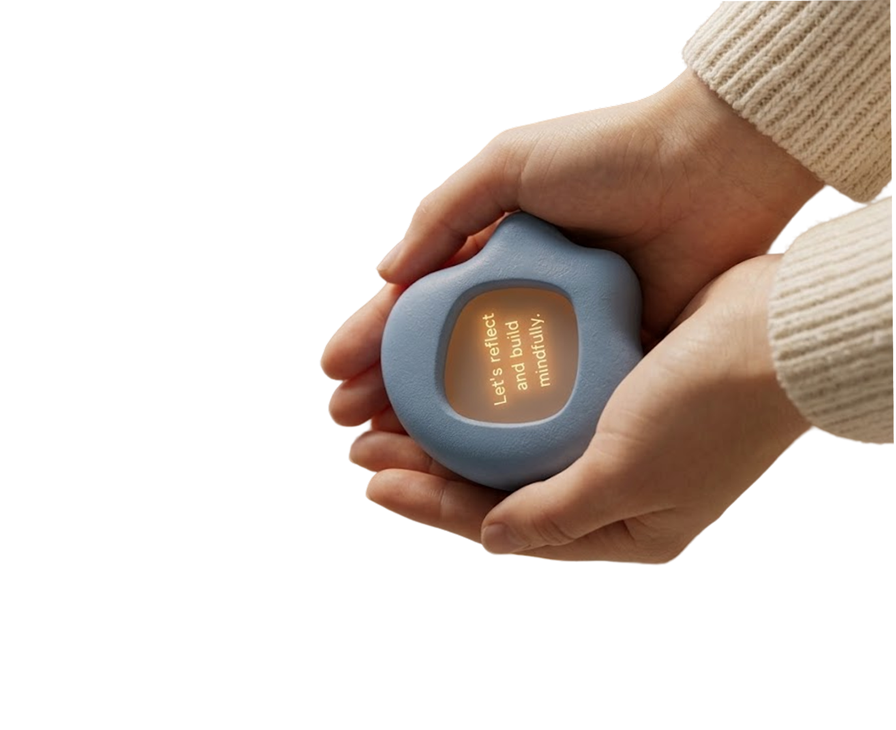
02 — Sensory Palm AnchorDeep Pressure & Guided Grounding
When held during moments of social hesitation, embedded haptics and warm respiratory light guide deep pacing to settle the nervous system before anxiety triggers phone unlocking.
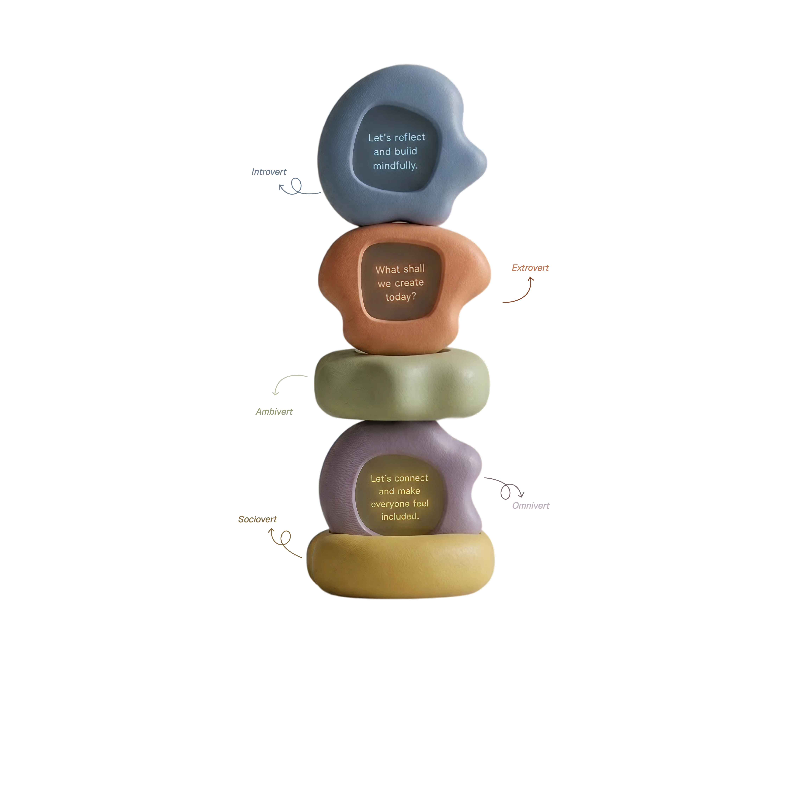
03 — Personality Spectrum StackThe Five-Dimension Archetype Stack
Each stone's organic contour is weighted and balanced to reflect diverse social styles—from the reflective Introvert to the fluid Ambivert and spontaneous Extrovert.
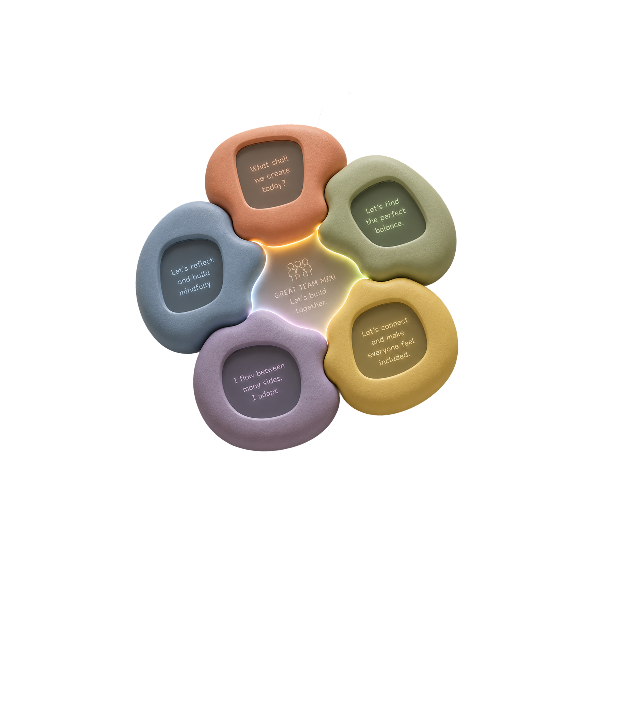
04 — Collaborative Magnetic PairingMagnetic Pairing & Collective Connection
When stones snap together in physical space, embedded magnetic sensors detect personality combinations, illuminating shared prompts ("Great Team Mix!") that spark effortless conversation.